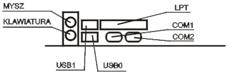

Jednostka centralna
Płyta główna
Podstawowe parametry płyty głównej:
- rodzaj zamontowanego Chipsetu:
- dla procesorów firmy Intel;
- dla procesorów AMD;
- rodzaj zamontowanego układu Bios (Award, Ami, Phoenix);
- częstotliwość zegara magistrali systemowej (zewnętrzna) (FSB);
- pamięć Cache - obecnie montowana wewnątrz procesora;
- rodzaj gniazda dla poszczególnych procesorów (Slot / Socket);
- ilość gniazd modułów pamięci RAM oraz maksymalna ilość pamięci możliwej do zainstalowania w systemie;
- ilość wolnych gniazd dla kart rozszerzających (ISA, PCI, Dual PCI, AGP, PCI Express x1, PCI Express x16);
- max. częstotliwość taktowania procesora;
- złącza IDE, Serial ATA;
- porty i złącza: COM, LPT, USB 1.1, USB 2.0, IEEE 1394 (inaczej Firewire, iLink), SCSI.
Gniazda umieszczone z tyłu komputera:
| PS/2 | Gniazdo klawiatury i myszy. |
| COM 1, COM 2 | Złącza szeregowe. |
| LPT 1 | Złącze równoległe. |
| USB | Uniwersalna szyna danych - możliwe podłączenie każdego urządzenia wyposażonego w to złącze. |

Rys.1. Rozmieszczenie gniazd wej/wyj z tyłu komputera.
Procesor
Rodzaje procesorów:
- Intel: Pentium III, Pentium IV, Celeron, Celeron II;
- AMD: Atlon, Duron, Athlon XP +, Athlon 64;
Podstawowe parametry procesorów:
- zewnętrzna częstotliwość taktowania procesora (FSB);
- wewnętrzna częstotliwość taktowania procesora (zazwyczaj jest to pomnożona zewnętrzna częstotliwość pracy,
np. Pentium III 667 - cz. zewn. to 133 MHz, wewnętrzna 667 MHz = 5 * 133 MHZ) - częstotliwość, z jaką pracuje jądro procesora;
- ilość pamięci Cache L1 i L2;
- zestaw dostępnych rozkazów (oprócz standardowych dodatkowo MMX, SSE, 3D-NOW);
- rodzaj zastosowanej obudowy i wyprowadzeń.
Najważniejsze elementy procesora:
- CPU - Central Procesor Unit (całość);
- ALU - Arithmetic Logic Unit (główna jednostka wykonawcza, moduł arytmetyczno-logiczny);
- FPU - Floating Point Unit (jednostka zmiennoprzecinkowa, koprocesor arytmetyczny);
- SIMD - Single Instruction Multiple Data (wykonywanie tej samej instrukcji na wielu danych jednocześnie);
- Cache L1, L2 - szybka pamięć wewnętrzna.
Pamięć wewnętrzna
RAM - pamięć operacyjna (robocza) komputera.
Rodzaje najczęściej stosowanej pamięci RAM:
- SRAM - statyczna pamięć RAM (nie wymaga odświeżania); pamięć bardzo szybka, ale również bardzo kosztowna; stosowana na pamięć Cache;
- DRAM - dynamiczna pamięć RAM (co pewien czas trzeba w niej odświeżać informacje) - moduły FPM i SIMM;
- DRAM - pamięć DRAM wyposażona w interfejs synchroniczny; dzięki temu wewnętrzne sygnały taktujące generowane są na podstawie zegara systemowego (moduły);
- DDR SDRAM - (Double Data Rate SDRAM) - sygnał przesyłany jest na obydwu zboczach sygnału zegarowego, co podwaja prędkość działania tych pamięci;
- RDRAM (Rambus Direct RAM) - bardzo szybka pamięć RAM.
ROM – Pamięć stała, tylko do odczytywania.
Informacja jest przechowywana stale nie ulega zniszczeniu ani zmianie. Pojemność tej pamięci jest zazwyczaj ograniczona.
Przechowuje się w niej informacje o systemie operacyjnym niezbędne do podjęcia pracy po wyłączeniu zasilania.
Pamięć ROM nie może być modyfikowana, można z niej tylko odczytywać dane.
Z tego też względu służą do przechowywania kluczowych informacji jak np. konfiguracja BIOS'u czy modemu.
Karty rozszerzeń
Karty umożliwiające rozszerzenie podstawowych funkcji komputera o kolejne, wzbogacające jego działanie.
Przykłady:
- karta grafiki - karta rozszerzeń, umiejscawiana na płycie głównej poprzez gniazdo AGP (coraz rzadziej PCI, wyłącznie w bardzo starych modelach ISA);
odpowiada w komputerze za obraz wyświetlany przez monitor; karty graficzne różnią się między sobą szybkością pracy, wielkością pamięci RAM,
wyświetlaną rozdzielczością obrazu, liczbą dostępnych kolorów oraz częstotliwością odświeżania obrazu; karta graficzna składa się z czterech podstawowych elementów:
płytki drukowanej, głównego procesora, pamięci wideo i układu RAMDAC (który często jest zintegrowany z procesorem w jednej obudowie);
- karta dźwiękowa - umożliwia odważanie dźwięków przez komputer;
- modem - pozwala na dołączenie komputera z siecią Internet poprzez stacjonarną linię telefoniczną;
- karta sieciowa - umożliwia połączenie komputera z innym komputerem lub z siecią komputerową.
Obudowa komputera
Jest jak gdyby skóra komputera. W jej wnętrzu umieszczana jest jednostka centralna wraz z kartami rozszerzeń.
Rodzaj obudowy może zadecydować o rodzaju płyty głównej umieszczonej wewnątrz niej,
a co za tym idzie również o innych parametrach komputera (rodzaj procesora, ilość pamięci czy kart rozszerzeń).
Rozmieszczenie elementów na płycie głównej jest standaryzowane (np. ATX).
Rys.2. Rodzaje obudów komputera.